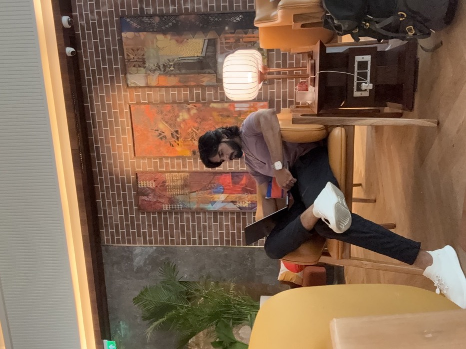
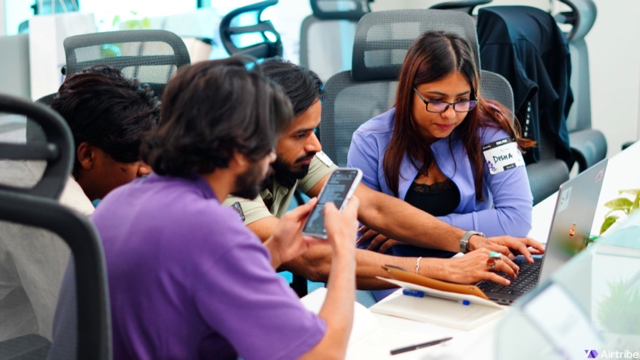
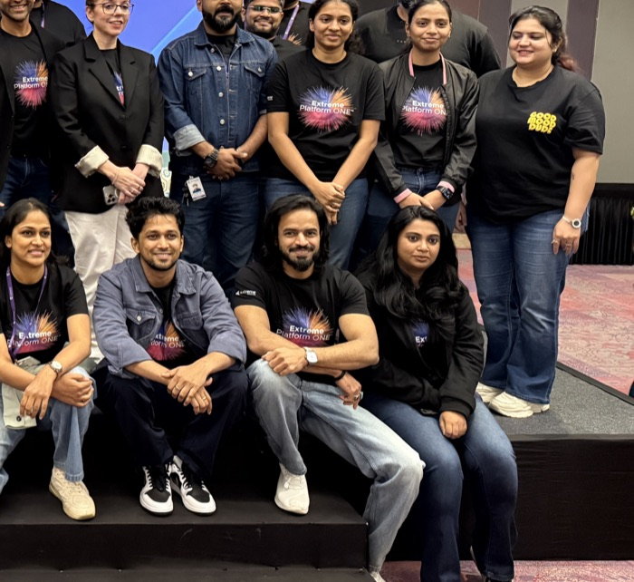
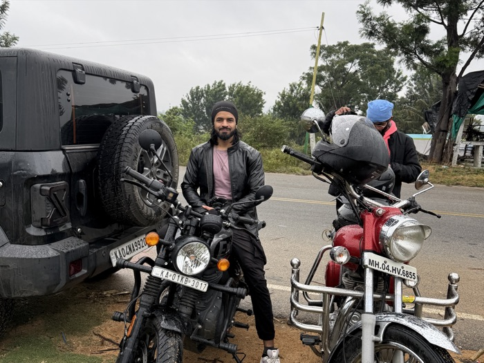

👋 About Me




Design and code have never been two separate worlds for me. They're one continuous thread 🧵 I've been pulling on for 9 years, the last 6+ spent designing intuitive, user-friendly, beautiful, business-forward products across both B2B and B2C, spanning enterprise networking & security, fintech & digital banking, sales & talent intelligence, e-commerce, and healthcare. Along the way I've helped cut manual admin effort by 90% through AI-driven UX, driven 2.2x platform growth serving 99M+ users, and helped grow SaaS ARR to $207.6M (+24% YoY) 📈 across 130+ global enterprise clients.
My superpower is the seam between design and engineering. I speak both fluently, so what I hand off actually ships, and what ships actually works. I lean on AI heavily in my process too, from research synthesis to vibe-coding functional prototypes myself before handoff, so ideas get tested in hours, not sprints. ⚡
My taste runs minimal. My process runs deep: hands-on across research, IA, design systems, prototyping, and testing, with real empathy for the user at every step. The goal is always the same: the easiest possible experience for the person using it, and a measurable win for the business paying for it.
Off-screen: painting 🎨, mentoring, philosophy, travel ✈️, gymming 💪, and event decor 🎉. Different canvases, same obsession with making things feel right.
🎓 B.Tech in Computer Science. Certified in both UI/UX Design and Full-Stack Software Development.